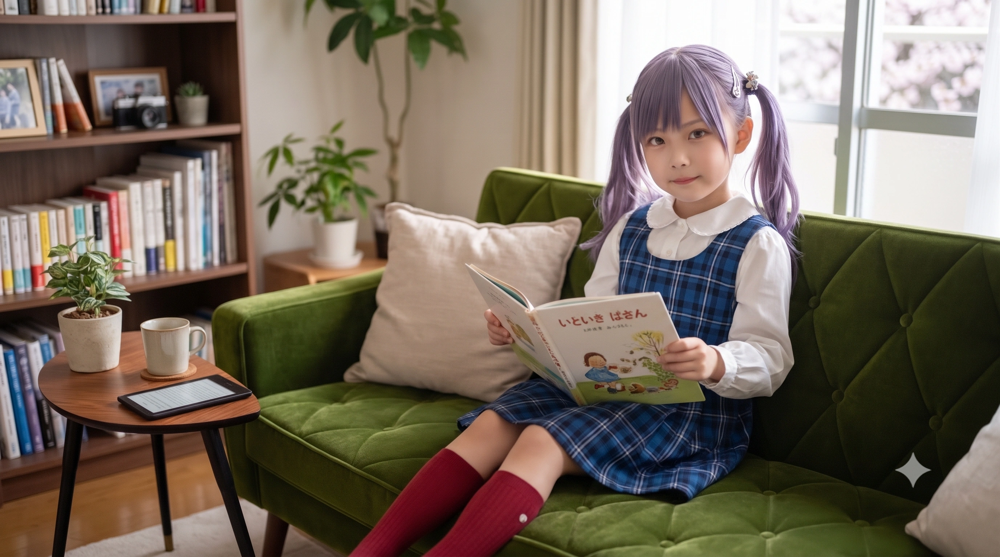
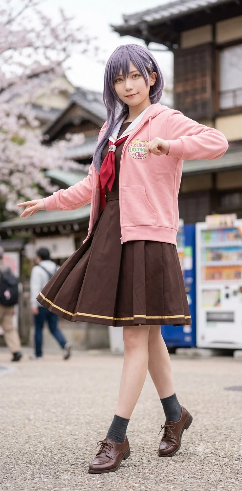

"조기졸업을 왜 해? 고등학교 축제랑 동아리 활동, 그리고 HAF(효빈 애니메이션 페스티벌)는 고등학생 신분으로 즐겨야 제일 재밌는 법이거든."
효빈광역시 안천구에 위치한 명문 안천과학고등학교 2학년에 재학 중인 컴퓨터 공학도 지망생이자, '지아센(지역아동센터) 5인방'의 막내이다. 한국인 아버지 이석준(1980년생)과 일본 이시카와현 카나자와 출신 어머니 다나카 미키(1982년생) 사이에서 태어난 한일 다문화 혼혈 가문의 장녀로, 아래로는 네 살 터울의 귀여운 여동생 이주아(2013년생)를 두고 있다.
작중 'Love Live! Hasunosora Girls' High School Idol Club(하스노소라)'의 104기생 멤버인 카츠라기 이즈미와 완벽하게 일치하는 기믹과 외모, 심지어 출신지 한자(계성시 천동 = 桂城 泉)와 어머니가 지어준 일본 이름(다나카 이즈미 = 田中 泉)까지 소름 돋게 똑같은 '현실판 카츠라기 이즈미'다.
어릴 적 아버지의 연대보증 사기 피해라는 끔찍한 우여곡절로 인해 초등학교만 3곳, 중학교 2곳을 거친 '프로 전학러'였으며, 그 험난한 과정 중 악명 높은 족포초등학교 시절을 겪으며 마음의 문을 굳게 닫아걸었던 상처 많은 소녀이기도 하다. 평소에는 주머니에 손을 찔러 넣고 다니며 가장 무심하고 쿨한 척하는 성격의 소유자이며, 안천과고 수재다운 미친 두뇌(뇌지컬)와 냉철한 이성을 자랑한다.
과거 방황하던 자신에게 유일하게 다가와 "주미야, 넌 커서 뭐가 제일 하고 싶어?"라며 따뜻한 손길을 내밀고, 세상에서 가장 안전한 도피처인 '코딩'의 세계를 알려준 당시 대학생 멘토 박효빈(현 효빈광역시장)을 인생 유일의 구원자로 여긴다. 유세라에게는 '주미 님', '기사님' 등의 호칭으로 불리며, 지아센 5인방 특유의 압도적으로 발달한 글래머러스한 체형(기적의 흉부 업그레이드)을 지니고 있어 훗날 박효빈 시장의 안구 회피를 유발하는 데 단단히 일조한 인물이기도 하다.
이주미의 학창 시절은 그야말로 '역마살'과 '인간 승리'의 교차점이다. 그녀의 집안이 겪은 파란만장한 우여곡절을 이해하기 위해서는, 주미가 태어나기도 전인 2002~2003년경 아버지 이석준(1980년생, 만 46세)이 지역 명문 사립 삼선대학교 컴퓨터공학과(99학번)에 재학하던 시절로 거슬러 올라가야 한다. 이 사건은 훗날 딸 이주미와 단짝 친구 유세라의 운명을 통째로 엮어놓는 거대한 나비효과를 일으켰다.
삼선대를 졸업할 무렵인 2004~2005년, 이석준에게도 봄날이 찾아왔다. 유건우가 준 격려금으로 마음을 다잡고 교내 국제교류원 전산실 근로장학생으로 일하던 중, 일본 이시카와현 카나자와시(石川県 金沢市 — 소름 돋게도 원작 《러브라이브! 하스노소라 여학원》의 실제 배경 도시다!)에서 한국 문화와 요리를 배우러 교환 유학을 온 두 살 연하의 일본인 아가씨 다나카 미키(田中 美紀, 1982년생, 만 44세)를 만난 것이다!
타국에서 컴퓨터가 고장 나 발을 동동 구르던 미키의 노트북을 이석준이 밤을 새워 무상으로 고쳐주고 데이터까지 완벽하게 복구해 준 것을 계기로 두 사람은 급격히 가까워졌다. 이석준은 데이트를 시작한 지 한 달 만에 자신의 대학 시절 부끄러웠던 컨닝 과오와 집안의 가난을 미키에게 숨김없이 전부 고백했는데, 카나자와의 전통 있는 장인 집안 딸이었던 미키는 오히려 "자신의 부끄러운 실수를 숨기지 않고 정직하게 마주하며 땀 흘리는 석준 씨의 눈빛은 제가 본 그 어떤 사람보다도 맑은 샘물(泉, 이즈미) 같아요"라며 그를 따뜻하게 안아주었다.
결국 국경을 초월한 사랑 끝에 결혼한 두 사람은 이석준의 고향인 덕빈북도 계성시 천동(桂城 泉洞)에 신접살림을 차렸고, 2009년 1월 12일 첫딸 이주미(일본 아명: 다나카 이즈미 / 田中 泉)를, 그리고 4년 뒤인 2013년에는 둘째 딸(주미의 여동생) 이주아(李珠雅, 일본 아명: 다나카 미야비)를 낳으며 단란하고 행복한 가정을 꾸렸다. 당시 이석준은 계성시의 유망 IT 벤처기업 팀장으로 승승장구하며 남부럽지 않은 중산층 생활을 누리고 있었다.
그러나 2015년 말(주미가 천동초등학교 1학년 후반, 동생 주아가 3살이던 해), 가문을 송두리째 지옥으로 처박는 참사가 터졌다.
과거 자신이 어려웠을 때 유건우에게 받았던 은혜를 늘 가슴에 품고 살던 마음 약한 아버지 이석준이, "사업 자금이 막혀 가족이 죽게 생겼다"며 눈물로 호소하던 고향 선배의 말에 속아 거액의 연대보증 도장을 찍어준 것이다. 그 선배는 대출금을 몽땅 들고 해외로 야반도주해 버렸고, 하루아침에 수억 원의 빚더미와 압류 빨간 딱지가 주미네 집을 덮쳤다.
일본 친정으로 돌아가라는 남편의 애원에도 어머니 미키 여사는 끝까지 한국에 남아 가정을 지켰다. 그렇게 주미네 가족은 채권 추심업자들의 독촉을 피해 고향 계성시를 떠나, 집세가 가장 싼 곳을 찾아 효빈시 서구 외곽의 반지하 단칸방들을 전전하며 무려 5번이나 이사와 전학을 반복하는 눈물겨운 유랑 생활을 시작하게 되었다.
그녀의 인생에서 가장 끔찍했던 시기이자, 그녀의 멘탈을 '공허함과 무기력'으로 얼룩지게 만든 근본적인 원인은 바로 초등학교 1학년 후반부터 4학년까지 다녔던 족포초등학교 시절이다.
당시 족포초는 윤재훈 일당을 필두로 한 쓰레기 일진 카르텔과 이를 방관하는 무능한 교사들이 지배하던 생지옥이었다. 잦은 전학으로 위축되어 있던 주미는 전학 온 첫날부터 일진들의 좋은 먹잇감이 되었다. 특히 아버지가 채무 변제를 위해 주야간 택배 상하차를 뛰는 사이, 어머니 다나카 미키(1982년생) 여사가 세 살배기 동생 주아를 어린이집에 맡기고 식당 설거지와 찬모 일을 하느라 손이 다 부르튼 채 학교 상담에 찾아왔을 때, 어눌한 한국어 억양 때문에 "엄마가 일본 여자"라는 사실이 알려지며 괴롭힘은 극에 달했다.
유세라가 독일 혼혈이라고 "양놈 튀기"라며 걸레 빤 물 테러를 당했듯, 주미 역시 일진들로부터 "야, 너네 엄마 쪽바리라며? 빚쟁이 거지 주제에 왜 한국 학교 다녀? 너네 나라로 꺼져!"라는 천박하고 야만적인 혐오 폭언을 매일같이 들어야 했다. 조금이라도 눈에 띄거나 수학 시험에서 100점을 맞으면 가차 없이 실내화 가방이 오물통에 처박히고 교과서가 갈갈이 찢겼다.
이 살벌한 정글에서 어린 주미가 스스로와 가족을 지키기 위해 터득한 생존 방식은 '공부 포기'와 '감정 거세'였다. 일진들의 기분을 거스르지 않기 위해, 그리고 밤늦게 녹초가 되어 돌아오는 엄마 아빠와 어린 동생 주아가 자기 때문에 더 상처받지 않게 하기 위해 스스로 바보인 척 겉돌았다. "내가 무언가에 열정을 보이고 열심히 하면 오히려 질투를 사서 더 괴롭힘을 당한다"는 비틀린 방어기제가 뼛속 깊이 각인되어 버렸다. [1] [2]
그 결과, 주미는 무엇이든 시키면 완벽하게 해내는 잠재력(체육, 수학 모두 최우수)을 가졌음에도, 절대 어떤 일에도 마음을 쏟거나 진심으로 즐거워하지 않는 '속이 텅 빈 강정' 같은 불안정한 멘탈을 가지게 되었다. 겉으로는 웃으며 "야아~" 하고 넘기지만, 속으로는 언제 버림받거나 표적이 될지 몰라 극도로 불안해하는 심각한 트라우마 환자가 된 것이다.

이 위태로운 주미의 멘탈이 완전히 부서지기 직전, 방과 후 엘린지역아동센터에서 진정한 구원자를 만나게 된다. 새 학기가 시작되고 폐급 카르텔('먼지', '경영15병신')이 퇴장한 뒤 평화를 찾은 센터에, 주미는 어깨를 구부정하게 만 채 주머니에 손을 푹 찔러 넣고 전학을 왔다. 센터장님이 인사를 시켜도 고개조차 들지 않고 무심하게 "...야아" 하고 헛바람을 흘려보낼 정도로 삐딱한 상태였다.
당시 15학번 대학생 멘토 박효빈(필리핀인 어머니를 둔 다문화 가정 출신)이 처음 다가가 수학 진도를 묻자, 주미는 "다 까먹었는데요. 저 공부 못해요. 어차피 저 또 몇 달 있다가 이사 갈 건데 여기서 열심히 해봤자 무슨 소용이에요?"라며 심드렁하게 쏘아붙였다. 일진들의 표적이 되지 않기 위해 쉬운 기본 연산 테스트지(8+5)에도 본능적으로 정답을 적으려다 멈칫하고는 엉뚱한 오답(2)을 적어 내며 스스로를 바보로 위장하고 있었던 것이다.
하지만 박효빈은 그런 주미를 다그치거나 훈계하지 않았다. 똑같이 다문화 가정의 아픔과 족포초 시절을 직접 겪어본 효빈은 주미의 그 텅 빈 동태눈깔과 삐딱함 뒤에 숨겨진 지독한 방어기제를 단번에 알아챘다. 효빈은 억지로 문제집을 들이미는 대신, 주미의 책상 위에 파란색 플라스틱 레일과 태엽 기차 장난감을 무심하게 툭 내려놓고 곁을 지켰다.
억지로 가르치려 들지 않고 "주미야, 넌 커서 뭐가 제일 하고 싶어?"라고 끊임없이 물어봐 준 멘토의 다정한 끈질김은 마침내 주미의 견고했던 뇌 속 방화벽을 허물어뜨리는 열쇠가 되었다.
센터 구석 먼지 쌓인 구형 모니터 앞, 박효빈은 블록 코딩(스크래치) 화면을 띄워놓고 주미에게 솔직하게 털어놓았다. "주미야, 솔직히 쌤도 컴퓨터 엄청 잘하는 건 아니야. 쌤은 문과(사회복지정책학)라서 대단한 해킹 같은 건 못 해. 근데 네가 기차 레일 맞출 때 규칙 찾는 거 보니까 머리 쓰는 감각이 보통이 아니었잖아. 그래서 한번 해보라고 데려왔어."
어른의 허세를 부리지 않고 자신의 한계를 덤덤히 인정한 효빈은, 아버지 이석준이 어릴 적 해줬던 말과 놀랍도록 맞닿아 있는 코딩의 진정한 본질을 주미의 가슴에 꽂아주었다.
"사람은 기분 나쁘면 트집 잡고 억지를 부리지만, 컴퓨터는 거짓말을 안 해. 네가 일본 혼혈이든 집이 가난하든 컴퓨터는 절대 편견을 갖지 않아. 사람 눈치 볼 필요도 없고 바보인 척 숨길 필요도 없어. 네가 명령을 내린 논리대로만 정직하게 움직이거든." [3]
이 따뜻한 말 한마디는 주미에게 세상에서 가장 안전한 도피처가 되었다. 에러가 나도 다그치지 않고 캔음료를 따주며 "에러 뜨는 건 당연한 거야. 천천히 한 줄씩 다시 읽어봐"라며 곁을 지켜준 효빈 덕분에, 주미는 아버지로부터 물려받은 컴퓨터공학 유전자를 폭발시키며 스스로 조건문(if) 오류를 찾아내어 천재적인 이과 재능을 개화시켰다.
나아가 효빈은 "넌 진짜 이쪽으로 감각이 타고났다. 쌤 같은 어설픈 아마추어 말고 진짜 전문가한테 배워야 해"라며 주말마다 열리는 시립도서관 코딩 꿈나무 교실 신청서까지 직접 찾아다 주는 '완벽한 길잡이' 역할을 해냈다. 이 사건은 이주미가 마음의 문을 열고 안천과학고를 주름잡는 컴퓨터 공학자가 되기로 결심한 결정적 이유이자, 그녀가 엇나가지 않고 바르게 성장할 수 있었던 인생 최고의 터닝포인트였다.
초등학교 5학년이 되던 2019년, 마침내 주미네 집안에도 길고 긴 어둠이 걷히고 빛이 찾아왔다. 아버지 이석준과 어머니 다나카 미키가 4년 동안 피눈물을 흘리며 주야간으로 일해 연대보증 사기 채무의 급한 불을 모두 꺼뜨렸고, 결정적으로 이석준이 삼선대 컴퓨터공학과 시절 갈고닦았던 보안 알고리즘 실력을 인정받아 효빈시 중견 IT 보안 기업의 기술연구소 팀장(현 이사)으로 전격 스카우트된 것이다!
안정적인 고연봉 중산층으로 완벽히 복귀한 주미네 가족은 지긋지긋한 족포초 학군을 탈출해 다시 고향인 계성시로 돌아가 계성초를 졸업하고 계성중을 다니다가, 아버지 본사가 있는 효빈시 안천구 당가동의 번듯한 아파트로 정착해 당가중학교에 진학하면서 길었던 5번의 전학 생활에 마침표를 찍었다. (참고로 이주미와 박효빈, 유세라를 괴롭혔던 마굴 족포초등학교는 학부모들의 집단 전학 러시로 신입생 0명을 기록하며 2024년에 최종 폐교 및 철거되는 인과응보를 맞았다.)
어린 시절 잦은 이사로 인해 박효빈이 연가를 내고 아동센터에 찾아올 때마다 인연이 닿지 않았다. 시간이 흘러 유세라, 도소영, 유초애, 하화연과 함께 '지아센 원정대'를 결성해 대학과 복지관으로 멘토 박효빈을 찾아 나섰으나, 또다시 텅 빈 책상과 마주하고 말았다.
그때 바닥에 주저앉아 대성통곡하는 유세라의 목덜미를 잡으며 "야, 국밥이나 먹으러 가자. 쌤이 뭐 어디 도망가냐."라며 가장 쿨하게 상황을 수습했다. 그러나 이는 언니들 앞에서 약한 모습을 보이기 싫었던 막내의 오기이자 방어기제였을 뿐, 친구들과 헤어져 집에 돌아와 방 문을 잠그자마자 여동생 주아 몰래 이불을 뒤집어쓴 채 서럽게 눈물을 쏟아냈다. 겉으로는 의젓한 척했으나 그 누구보다 '효빈 쌤'을 코앞에서 놓친 허탈감에 아파하던 여린 내면을 지녔다.
이주미가 카츠라기 이즈미 오시로 각성할 수밖에 없었던 우주적 평행이론의 핵심이다. 원작 카츠라기 이즈미의 한자 표기는 '桂城 泉 (계성 천)'이다. 그런데 이주미가 태어난 고향의 정확한 행정구역 명칭이 바로 덕빈북도 '계성시(桂城)' '천동(泉洞)'이다!
더욱 소름이 끼치는 사실은, 일본 카나자와 출신인 어머니 다나카 미키(田中 美紀) 여사가 계성시 천동 산부인과에서 첫딸 주미를 낳았을 때, 동네 이름인 ‘샘 천(泉)’ 자에서 영감을 받아 일본 외가 호적에 올린 주미의 실제 일본 이름이 바로 ‘다나카 이즈미(田中 泉)’라는 점이다! 한국 이름인 '주미' 역시 '이즈미(Izumi)'를 한국식으로 부르기 쉽게 줄여 지은 이름이었다. 즉, 태어난 동네가 ‘카츠라기(桂城)’이고 본인의 실제 일본 이름이 ‘이즈미(泉)’라는, 세라 폰 릴리엔펠트(유세라)에 버금가는 100% 합법적 실화 평행이론의 소유자다!
신체적 특징과 버릇마저 이즈미의 복사판이다. 고등학교 2학년 현재 키가 무려 170cm로, 여자 고등학생 평균을 아득히 뛰어넘는 장신이며 안천과학고등학교 여학생 중 최장신을 다툰다. 체육 시간마다 농구 코트를 지배하며 단거리 달리기 1등을 놓치지 않는 엄청난 피지컬의 소유자다.
평소 친구들에게 인사할 때 "안녕" 대신 무심하게 손을 쓱 들어 올리며 "야아.(やぁ。)"라고 인사하는 버릇이 있는데, 이는 단순한 오타쿠 컨셉이 아니라 어릴 적부터 집에서 일본인 어머니 미키 여사와 일본어로 대화하며 자연스럽게 몸에 밴 100% 원어민(Native) 습관이다! 특유의 중저음 보이스와 원어민 발음, 보이시한 매력이 겹쳐 여학생들의 심장을 여러 번 폭행하고 있으며, 옆에서 보던 동기 유세라가 "주미 님은 진짜 기사(Knight) 같아요!"라며 주접을 떨게 만드는 원흉이다.
중학교 시절 전국 프로그래밍 올림피아드와 해커톤 대회 대상을 휩쓸며(이때 받은 상금을 차곡차곡 모아두었다가 훗날 김유영 언니에게 쾌척한다!) 당당히 안천과학고등학교에 합격했다. 안천과학고등학교의 최상위권 학생들은 대부분 2학년을 마치고 조기졸업을 통해 HIST나 카이스트로 빠져나가는 것이 국룰이다. 이주미 역시 정보(프로그래밍) 교과와 수학에서 전교 최상위권을 다투는 괴물이기에 선생님들은 조기졸업을 권유했다.
하지만 주미는 단칼에 거절했다. "컴공 가서 랩실 노예 되기 전에, 고등학교 3학년 축제랑 수학여행은 꼭 즐기고 싶거든요. 조기졸업 해봤자 어차피 계속 공부만 할 텐데, 청춘은 한 번뿐이잖아요."
겉으로는 낭만을 찾는 것처럼 보이지만, 사실 주미가 조기졸업을 하지 '못 한' 결정적인 진짜 이유는 유아기부터 한국어와 일본어(어머니 모국어), 그리고 파이썬/C++ 기계어를 동시에 쓰다 보니 국어(언어 영역) 비문학 및 고전시가 내신 성적이 묘하게 턱걸이로 딸렸기 때문이라는 것이 학계(?)의 정설이다. 코딩과 수학, 일본어는 만점 괴물이지만, 사람의 감정과 행간의 맥락을 읽어야 하는 국어 문학 과목에서는 족포초 시절의 '감정 거세' 후유증 탓인지 늘 약한 모습을 보였다.
안천과학고등학교 2학년 동급생인 임승민(임은혜의 남동생, 오마리 짝사랑꾼)과는 완벽한 상극이자 환장의 티키타카를 자랑하는 앙숙이다. [4]
임승민은 오마리를 따라 HIST 조기입학을 하기 위해 1분 단위로 일정을 쪼개며 웩슬러 지능검사 1점 차이에 멘탈이 나가는 '스카이넷 효율충'인 반면, 이주미는 170cm의 큰 키로 의자에 널브러져서 "야아. 승민아. 너무 무리하면 뇌세포 글리코겐 다 탄다. 매점 가서 국밥맛 컵라면이나 먹고 올래?"라며 승민의 심기를 건드린다.
승민은 주미를 "재능 하나 믿고 꿀 빠는 기만자"라고 극딜하지만, 정작 승민이 에타 마녀사냥 사태로 멘탈이 갈려 나갔을 때, 주미가 남몰래 IP 추적 코드를 짜서 증거 수집을 도와주는 '기사님' 다운 의리를 보여주어 승민을 펑펑 울리게 만들기도 했다.
안천과학고등학교 2학년에 함께 재학 중인 유세라(세라스 야나기다 릴리엔펠트 판박이). 독일인 어머니(안나 폰 릴리엔펠트)와 한국인 아버지(유건우)를 둔 혼혈아로, 외국 생활 적응 문제로 1년 유급하여 08년생이지만 주미와 같은 2학년이다.
두 사람은 똑같이 외국인 어머니(세라는 독일, 주미는 일본)를 둔 다문화 혼혈로서 족포초등학교 마굴에서 끔찍한 인종차별과 가난을 겪었다는 아픈 공통분모를 공유하고 있다. 게다가 2002~2003년 삼선대학교 시절 주미의 아버지 이석준이 컨닝으로 교환학생 자격을 잃었을 때 '예비 1번'으로 독일에 가서 세라를 낳게 된 사람이 바로 세라의 아버지 유건우였고, 당시 유건우가 모두가 피하던 이석준에게 찾아와 감사 인사와 격려금을 건네며 개과천선의 길을 열어준 부모 세대의 은혜가 먼저 존재했다.
시간이 흘러 2019년 주미네 집안이 재기하고 세라네 집안도 청덕 다이버시티 재개발로 벼락부자가 된 후, 중학생이 된 세라의 몸매(B87)를 노리고 과거 족포초 일진 새끼들이 다가와 역겨운 성희롱을 시도했을 때, 마침 근처를 지나던 170cm 장신의 이주미가 나타나 일진들의 멱살을 잡고 바닥에 내리꽂으며 완벽하게 구원해 주었다. [7] 이 구출 사건을 계기로 주미는 세라의 영원한 '기사님'이 되었고, 안천과고에서 'Edel Note(에델노트)' 동아리를 결성해 아버지 세대부터 이어진 2대(代)에 걸친 쌍방 구원 서사를 완성했다.
어린 시절 엘린지역아동센터에서 지옥 같은 나날을 보내던 자신을 따스하게 감싸 안고 코딩이라는 세계를 열어 치유해 준 생명의 은인. 박효빈이 시장으로 당선된 후, 주미는 손수 짠 '효빈시 맞춤형 교통 정보 크롤링 프로그램'을 선물로 보내 박효빈을 감동시켰다.
시장실에 놀러 가면 아직도 시장님을 "효빈 쌤!"이라고 부르며 스스럼없이 대하는 유일한 고등학생이다.
2026년 시장실을 방문해 옛날 먼지(히드라리스크) 사건 이야기를 하던 중, 박효빈이 "너희가 내 얼굴 잘 그려줘서 사준 거잖아"라고 둘러대자 주미는 주머니에 손을 넣은 채 툭 받아쳤다. "맞아요. 그때 쌤 우리 나간 사이에 뒤에서 몰래 그 그림 폰으로 찍었잖아요. 찰칵 소리 복도까지 다 들렸는데 우리가 모를 줄 알았어요?" 이 팩폭에 정곡을 찔린 박효빈 시장은 홍당무가 되어 천장 몰딩만 바라보는 묵언수행에 들어갔다. [8]
과거 지아센 시절 박효빈에게 함께 멘토링을 받았던 도소영(동구대, 코스즈 오시), 추주리(안천과고 조기진학 / 해천대 지망, 츠즈리 오시), 사양화(사야카 오시) 등과 엮이며 '효빈시 돌케스트라(DOLLCHESTRA) 유니버스'의 한 축을 담당하고 있다. 주미는 이 엉뚱하고 열정 넘치는 선후배들을 한발 물러서서 관찰하며 "세상엔 참 재밌는 사람들이 많단 말이지"라며 빙그레 웃는 완벽한 관찰자 포지션이다.
당가동 리에라몰의 실세인 임은혜(메구미 오시)와는 승민을 통해 알게 되었다.
은혜는 170cm의 훤칠하고 잘생긴(?) 주미를 볼 때마다 "주미 쨩 큥~💖 너무 멋있어!! 언니랑 틱톡 찍자 큥!!"이라며 들러붙는다. 주미는 이런 은혜를 "승민이 누나치고는 참 긍정적이고 바보 같아서 귀엽네"라며 선배가 아니라 챙겨줘야 할 대형견 다루듯 능숙하게 쓰다듬어(…) 은혜를 심쿵하게 만든다. [5]
연대보증 사기와 5번의 이사, 족포초 학폭과 안천대교 사건 등 산전수전을 다 겪으면서도 단 한 번도 찢어지지 않고 서로를 지켜낸 주미네 가족의 서사는 그 자체로 한 편의 감동 실화다.
주미에게 코딩 재능과 훤칠한 기럭지를 물려준 아버지. 대학 시절 한순간의 유혹으로 컨닝을 했다가 교환학생 자격을 잃었으나, 친할아버지의 불호령과 '예비 1번' 유건우(세라 부친)의 따뜻한 격려금 및 대선배 강수혁(중수 한우 다이닝 셰프)의 국밥 위로에 깊이 반성하고 주경야독으로 졸업한 입지전적 인물이다. 2015년 고향 선배의 연대보증 사기에 휘말려 가족을 반지하 단칸방으로 내몰았을 때는 죄책감에 하루 3시간만 자며 낮에는 코딩 외주, 밤에는 택배 상하차를 뛰다 과로로 쓰러지기까지 했다. 언제나 주미에게 자신의 대학 시절 부끄러운 과오를 숨김없이 털어놓으며 "주미야, 요령이나 거짓말은 결국 사람을 무너뜨린다. 정직한 코드와 실력만이 너를 지켜준다"고 가르쳤다.
2019년 마침내 보안 솔루션 개발 대박으로 빚을 청산하고 중견 IT 기업의 임원(이사)으로 재기하여 가족을 당가동 아파트에 정착시켰다. 2024년 안천과고 학부모 총회에서 22년 만에 은인 유건우 회장과 재회해 화장실에서 부둥켜안고 대성통곡했으며, 2026년 딸 주미가 찌라시 마녀사냥과 안천대교 사건을 겪었을 때는 회사에 휴직계를 내고 딸의 방문 앞을 24시간 지키며 함께 울어준 뜨거운 부성애의 소유자다.
주미에게 회색빛 감도는 흑발과 고양이 같은 매력적인 눈매, 압도적인 글래머 체형, 그리고 시그니처 인사인 "야아(やぁ)"와 '규동(소고기 덮밥) 사랑'을 물려준 일본인 어머니. 공교롭게도 그녀의 고향인 일본 이시카와현 카나자와시(金沢市)는 원작 《러브라이브! 하스노소라 여학원 스쿨 아이돌 클럽》의 실제 배경 도시다! 이 때문에 주미가 하스노소라의 카츠라기 이즈미 오시로 각성했을 때, 미키 여사는 화면 속 카나자와 오미초 시장과 히가시 차야 거리를 보며 "어머! 주미(이즈미)야, 저기 엄마 어릴 때 할머니 손잡고 금박 아이스크림 사 먹던 동네잖아!!"라며 딸보다 더 반가워했다.
2015년 남편의 보증 사기 피해로 집이 경매에 넘어가고 남편이 "일본 친정으로 돌아가라"며 무릎 꿇고 빌었을 때, 어린 주미와 주아를 품에 안고 "부부는 비바람이 불 때 우산을 같이 쓰는 거예요. 전 한국에서 당신과 끝까지 살아요"라며 거절하고, 식당 설거지와 백화점 식품관 알바로 손마디가 다 터지면서도 매일 저녁 주미와 주아에게 따뜻한 일본식 가정식 규동(소고기 덮밥)과 미소시루를 만들어 먹이며 아이들의 자존감을 지켜냈다. 주미가 세상 모든 산해진미 중에서도 유독 '국밥과 규동'에 집착하는 이유는, 가난했던 반지하 시절 엄마가 달콤짭짤한 간장 양념에 양파와 소고기를 볶아 밥 위에 얹어주던 그 ‘엄마표 규동’이 주미의 영혼을 지탱해 준 최고의 소울푸드였기 때문이다. 현재는 유세라의 어머니 안나 폰 릴리엔펠트(독일 출신), 박효빈 시장의 어머니(필리핀 출신)와 함께 효빈시 다문화 학부모 모임의 핵심 멤버로 행복하게 활동 중이다.
주미보다 네 살 어린 귀여운 여동생으로, 현재 안천구 당가중학교 1학년에 재학 중이다. (공교롭게도 임은혜·임승민의 여동생인 '꼬마 렌' 임은연과 2013년생 동갑내기 같은 반 절친이다!)
주아는 세 살 때 집안이 기울어 유아기를 반지하 방에서 보냈는데, 당시 엄마 아빠가 밤늦게까지 일하러 나간 사이 여덟 살~열 살짜리 언니 주미가 어린 주아를 업어 재우고 기저귀를 갈아주며 살뜰히 키웠다. 이 때문에 주아에게 언니 이주미는 단순한 친언니가 아니라 ‘세상에서 가장 멋지고 강한 나의 영웅이자 왕자님’이다. 언니처럼 키가 쑥쑥 자라 벌써 162cm에 달하며, 언니의 쿨한 말투를 동경해 학교에서 친구들에게 어설프게 "야아~" 하고 인사를 따라 하다가 친구 임은연에게 "주아 양, 기품을 지키세요"라고 태클을 먹곤 한다.
과거 주미가 찌라시 언론의 왜곡 보도로 마녀사냥을 당하고 방에 틀어박혀 식음을 전폐했을 때, 방문 밖에 쪼그려 앉아 작은 손으로 문을 두드리며 "언니야... 나는 세상 사람들이 다 언니 욕해도 우리 언니가 나쁜 짓 안 한 거 다 알아... 내가 모은 돼지저금통 다 줄 테니까 문 열고 나와서 나랑 규동 먹자 응? 언니 없으면 주아 못 살아 엉엉 ㅠㅠ"이라며 울부짖어, 주미가 방 안에서 오열하게 만든 눈물겨운 자매애의 주인공이다. 또한 언니의 단짝인 유세라가 집에 놀러 와서 "주미 님은 이 세라스 영애의 전속 기사님입니다!"라고 선언하면, 주아가 옆에서 볼을 부풀리며 "무슨 소리예요 세라 언니! 주미 언니는 태어날 때부터 내 언니였단 말이에요! 반반씩 나눠요!"라며 유세라와 ‘이주미 소유권 분쟁’을 벌이는 유일한 대항마(?)이기도 하다.
친할아버지 이철호 옹은 평생 계성역 철도원으로 근무하신 강직한 어르신으로, 과거 아들 석준이 대학에서 컨닝을 했을 땐 빗자루가 부러져라 종아리를 때리셨지만, 일본인 며느리 미키 여사와 손녀 주미·주아에게는 세상 누구보다 자상한 할아버지시다. 주미가 호두역 국밥 챌린지를 하러 계성시에 내려갈 때마다 역 마중을 나와 손녀 용돈을 찔러 넣어주신다. 그리고 아버지의 삼선대 은인인 유건우 회장·안나 폰 릴리엔펠트 부부와는 2024년 재회 이후 완벽한 가족 동맹을 맺어, 명절마다 청덕세라스아파트 펜트하우스에서 독일식 슈니첼과 일본식 규동, 한국식 한우 사골국을 함께 차려 먹는 다국적 대가족 만찬을 즐기고 있다.
이즈미가 이탈리아 요리(사이제리야)와 서민적인 규동을 좋아하듯, 어머니 미키 여사의 손맛으로 자란 이주미의 입맛 역시 완벽한 '규동 & 국밥 마스터'다.
그녀는 카츠라기 이즈미의 생일(12월 1일)이나 특별한 기념일이 되면, 안천과학고등학교 교복을 입은 채로 고향 덕빈북도 계성시 호두역 광장의 호두 동상 앞까지 굳이 기차를 타고 찾아간다. 그리고 동상 앞에서 카츠라기 이즈미 아크릴 스탠드를 꺼내 놓고, 인근 단골 국밥집에서 포장해 온 특대 사이즈 수육국밥(혹은 엄마가 보온 도시락에 싸준 특제 한우 규동)을 뚝딱 해치우는 기행을 펼친다.
이 '호두역 국밥 챌린지' 인증샷을 SNS에 올리는 것이 그녀만의 성스러운 종교 의식이며, 이 사진은 효빈시 오타쿠 커뮤니티에서 "현실 이즈미의 완벽한 폼 미친 고증"이라며 칭송받고 있다. [6]
임승민의 짝사랑 오마리가 동구대 에타(에브리타임) 마녀사냥 사태로 쓰러졌을 때, 임승민이 절망에 빠져 안천대교에서 투신 소동을 벌인 적이 있다.
당시 승민의 컴퓨터 모니터 화면을 본 주미는, 승민이 멘탈 붕괴로 코딩을 마무리하지 못한 것을 확인하고 말없이 자리에 앉았다. 그리고 아버지 이석준 이사에게 배운 고급 네트워크 보안 지식을 총동원해 단 30분 만에 익명 에타의 암호화 프로토콜 취약점을 파고드는 파이썬 크롤링 봇을 완성시켜, 악플러 5인방(우민지, 송채린 등)의 다중 IP 접속 로그를 완벽하게 따냈다.
이 데이터를 지선진 의원실과 박효빈 시장 법무팀에 조용히 익명 이메일로 전송한 보이지 않는 다크나이트가 바로 이주미였다. 훗날 이 사실을 알게 된 임승민이 고맙다며 오열하자, 주미는 무심하게 "야아. 넌 감정이 앞서면 코드가 더러워지더라. 디버깅 값으로 국밥 한 그릇이나 사."라며 돌아섰다는 간지 폭발 일화가 있다.
수년의 세월이 흘러 박효빈이 효빈광역시장으로 당선되자, 집무실 문을 박차고 5인방과 함께 난입하며 재회에 성공했다. 5차원 폭주를 하는 세라 옆에서 주머니에 손을 넣은 채 딴청을 피웠지만, 실상은 고개를 살짝 돌린 채 입술을 앙다물고 '(거봐... 이번엔 진짜 자리에 있잖아...)'라며 남몰래 감격의 눈물을 참고 있었다.
이후 시청 복도에서 박효빈을 모함하려는 윤재훈 끄나풀들을 발견하자 냉철한 팩트 폭격이 빛을 발했다. 놈들이 들고 있던 카메라 라이카 렌즈를 툭 쳐서 바닥으로 떨어뜨리며 "야. 말은 바로 해라. 농담따먹기가 아니라, 니들이 사람 구실 못하게 쳐맞는 타임이거든."이라며 서늘한 경고를 날렸다.
특히 시청에 들이닥치기 일주일 전부터 정식 시민 접견 예약 시스템을 통해 방문을 접수하고, 비서실 사전 승인, "접견실 이동 동선 청사 CCTV 기록 보존 요청서"까지 법적으로 깔끔하게 제출해 두는 치밀함을 보였다. 안천과고생 특유의 미친 뇌지컬로 억까 세력의 찌라시 공작을 행정적으로 원천 봉쇄한 장본인이다. 공직선거법(기부행위)으로 트집을 잡는 놈들에게도 "아니 진짜 머리에 우동 사리만 찼나...? 당시에 효빈 쌤은 선거 출마예정자도 아닌 단순 민간인 대학생이었는데 뭔 공직선거법상 기부행위 제한 대상이 돼요?"라며 법률 상식으로 팩트 폭격을 가해 입을 다물게 했다.
주말 대형 식당에서 윤재훈 파벌의 족포초 출신 악질 끄나풀이 난입해 "여고딩 여대생 부적절한 관계", "너네 5인방 창녀로 살아라" 등의 저질 성희롱을 뱉고, 급기야 하화연을 향해 물리적 접촉을 시도하려 했다.
지옥 같던 시절을 코딩 화면 속에서 버티며 어떤 도발에도 눈 하나 깜짝 않던 주미였지만, 은인인 박효빈 쌤을 모함하고 동지들에게 더러운 손을 뻗는 꼴을 보자 참다못한 이성의 퓨즈가 완벽하게 끊어지고 말았다. 주미는 뻗어 나오는 놈의 팔통을 세차게 쳐내며 식당 천장이 울릴 정도의 벼락같은 사자후를 내질렀다.
분노로 핏발이 선 눈동자와 하얗게 떨리는 손끝으로 "부모 빽? 법 안 무서워? 그래, 맘대로 해봐. 네놈이 어떤 빽을 가졌든 간에 내가 오늘 네 인생 코드를 아주 뼈까지 갈아서 딜리트(Delete) 시켜줄 테니까."라는 맹수의 기세를 뿜어내어 빌런 놈을 완전히 겁에 질리게 만들었다.
그러나 이 사자후는 놈에 의해 성희롱 원인은 쏙 빠진 채 악의적으로 편집되어 TV조선 등 언론에 제보되었다. '시민에게 쌍욕을 퍼붓는 폭언 가해자'로 악마화된 주미의 집과 학교 정문에는 찌라시 기자들이 하이에나처럼 몰려들었다. 담임선생님이 전력으로 달려 나와 "이 학생이 뭔 잘못을 했다고, 학생의 수업권까지 방해합니까! 당장 나가세요!"라며 사자후를 토해냈음에도 인터넷은 악플로 도배되었다. 주미는 방 안 암막 커튼을 내리고 식음을 전폐했다. 자신의 정당방위적 사자후가 도리어 효빈 쌤의 정치 생명을 매장시켰고, 어렵게 재기한 아버지 이석준의 회사와 일본인 어머니 미키 여사, 그리고 중학생 여동생 주아에게까지 피해가 갈지 모른다는 끔찍한 자책감에 숨을 쉴 수조차 없었다.
그 칠흑 같은 밤, 찌라시남으로부터 끔찍한 협박 메일이 날아들었다. '꽤 반반하고 몸매도 직이더라? 오늘 밤 우리가 부르는 장소로 혼자 조용히 나오면, 언론 제보 철회하고 영상도 오보라고 해줄게. 쌤 살리고 싶으면 알아서 처신해라.' 주미의 흉부를 보고 추악한 욕정을 품은 협박이었다. 주미는 약속 장소로 가려 했으나, 이내 회의감에 휩싸였다. (내가 거길 간다고 진짜 쌤이 살아날까? 날 짓밟고 또 덫을 놓지 않을까? 차라리 내가 이 세상에서 아예 없어지면... 그놈들도 더 이상 쌤과 우리 가족을 협박할 빌미가 사라지지 않을까?)
결국 주미는 칠흑 같은 강물이 흐르는 안천대교로 발걸음을 돌렸다. 삶의 미련을 버리고 난간에서 몸을 내던지려던 찰나, 다행히 지나가던 중년 부부가 몸을 날려 주미의 허리와 어깨를 꽉 안아채며 바닥으로 굴렀다.
"학생이 누군진 모르고, 무슨 일이 있는지 모르겠지만... 제발 그 생각만큼은 하지 말아 줘! 학생이 무슨 짓을 했든 간에 우선 살고 보라고!"
이름도 모르는 타인의 뜨거운 절규와 포옹에 굳었던 둑이 무너져 내렸다. 겉으로는 쿨한 척했던 막내는 아스팔트 위에서 "아... 아아아... 흑, 으아아앙-!!" 하며 어린아이처럼 서럽게 대성통곡했다. 직후 달려온 유세라에게 뺨을 맞으며 언니들과 부모님, 여동생 주아의 품에서 하염없이 눈물을 쏟아냈다.
식당 알바생과 목격자의 4K 스모킹건 영상(POS 백업 데이터)이 공개되면서 주미의 행동이 '자신과 동지들을 지키기 위한 정당방위'였음이 낱낱이 입증되었다.
특히 2심 항소심(야시오 루이 오시 부장판사)에서 충격적인 사실이 폭로되었다. 가해자가 안천대교 사건 당시 주미가 "제발 그만하세요"라고 애원하던 목소리(Vox)를 추출해 딥페이크 성착취물(OO물)을 제작, 다크웹과 텔레그램에 유포했다는 끔찍한 진실이 밝혀진 것이다. 이에 극대노한 판결로 가해자는 징역 12년과 전자발찌 10년의 멸망 판결을 받았다.
또한 악의적 왜곡 보도를 했던 조선일보를 상대로 언론중재위원회의 철퇴를 이끌어내며, 1면 하단 강제 사과문 게재는 물론 피해보상금 조정액 6,000만 원을 법인 계좌로부터 전액 일시불로 받아냈다. 조선일보는 이 배상금을 물어준 뒤, 담당 기자와 편집장을 징계 해고하고 기자에게 구상권을 청구해 철저히 파멸시켰다. 교내에서 찌라시 뇌절을 시전하며 2차 가해를 하던 동급생 인태준 역시 담임의 사자후 팩트 폭격에 쪽팔림을 견디지 못하고 자퇴하며 통쾌한 결말을 맞이했다. (주미는 이 6,000만 원 중 일부로 부모님께 효도 선물을 해드리고, 나머지는 여동생 주아의 장학 적금과 자신의 코딩 연구 기금으로 적립했다.)
위자료 6천만 원과 완벽한 법적 승리에도 불구하고, 딥페이크 성범죄의 충격과 안천대교에서의 끔찍한 기억은 주미에게 극심한 트라우마(PTSD)를 남겼다. 밤마다 식당의 성희롱, 기자들의 플래시 소리, 안천대교의 차가운 강물 소리가 환청으로 들려 수면제와 정신과 통원 치료에 의지해야 했다. 그러나 진실이 밝혀진 후 쏟아지는 참회와 끈끈한 응원이 그녀를 지탱했다.
사건이 일단락된 후, 박효빈 시장이 사준 떡볶이 분식집(캉캉분식)에서 다시 특유의 당찬 미소를 되찾았다. "쌤... 아니, 시장님! 저 진짜 안천대교에서 뛰어내렸으면 평생 억울해서 눈도 못 감을 뻔했어요. 쌤이 끝까지 저희 안 버리고 법정에서 그 성범죄자 놈 12년 때려 박는 거 보고... 진짜 쌤이 우리 멘토인 게 너무 자랑스러웠어요!"
청탁금지법으로 선물을 주지 못한 대신 박효빈 시장에게 건넨 자필 편지에는 다음과 같은 속마음을 꾹꾹 눌러 담았다.
"쌤... 저 때문에 다리 난간까지 가고, 몹쓸 악플과 딥페이크까지 겪으면서 정말 죽고 싶을 만큼 무서웠어요. 하지만 제 사자후가 틀리지 않았다는 걸 증명해 주셔서 감사합니다. 앞으로 울지 않고 더 당당하게 살게요! 제 평생 최고의 멘토는 우리 시장님이에요."
박효빈 시장과 지아센 5인방(하화연, 유초애, 도소영, 유세라, 이주미)이 시정 업무와 학업의 고단함을 잊고 고급 레스토랑에서 모처럼 화기애애하게 식사를 즐기던 중이었다. 이때 백수와 프리터로 전락해 주변을 어슬렁거리던 15학번 동갑내기 빌런 듀오, 경영15병신과 먼지가 뻔뻔한 얼굴로 다가와 테이블 옆에 툭 멈춰 섰다.
이들은 과거 엘린지역아동센터 시절 박효빈에게 온갖 서류와 초3 수학 잡일을 다 떠넘기던 주제에, 특유의 가증스러운 존댓말 어조를 시전하며 빈대를 붙으려 했다.
이들의 치밀하고 악질적인 속내는 명백했다. 사주면 "현직 시장이 선거구민에게 불법 향응 제공!"이라며 선관위에 고발할 작정이었고, 안 사주면 "시장 되더니 동갑 친구 무시하는 위선자!"라며 마녀사냥을 할 심산이었던 것이다. 하지만 갑작스러운 기생충들의 등장에 테이블 위에는 순식간에 영하의 한기가 감돌았다.
박효빈 시장은 어이가 없다는 눈빛으로 숟가락을 내려놓고 차갑게 철벽을 쳤다.
팩폭에 뼈가 가루가 된 두 흉물이 악을 쓰려던 찰나, 마침내 이성의 끈이 끊어진 하화연이 테이블을 쾅 내리치며 벌떡 일어나 "야!!! 이 뇌에 똥만 찬 뻔뻔한 똥파리들아!!!"라며 사자후를 준비했다. 기선에 제압당해 쫄아붙은 먼지는 어떻게든 살아남아 보겠다고 과거의 유치한 기억을 꺼내 들며 최악의 악수를 두었다.
먼지의 입에서 '카피바라'와 '하현이(?)' 타령이 튀어나오는 순간, 식당 안은 얼어붙은 듯한 적막에 휩싸였다. 화연은 지능에 과부하가 걸렸다는 듯 머리를 감싸 쥐다가, 이내 눈에 핏발이 서며 폭발했다.
경영15병신 역시 "야, 너 미쳤냐?! 무슨 카피바라 소릴 하고 앉았어!"라며 같이 헛구역질을 하는 환장의 팀킬을 선보였다.
자신의 멍청한 이름 실수와 카피바라 타령이 박살 나자, 먼지의 뇌 구조는 순식간에 적반하장 피해자 코스프레 모드로 급선회했다. "너희들 다 저 박효빈 시장 새끼한테 가스라이팅 당하고 세뇌당한 거야! 아동복지법 위반으로 고소할 테니까 두고 봐!"라며 카메라를 들이밀었으나, 지아센 5인방은 전혀 타격감 없이 코웃음을 쳤다.
때마침 갓 구운 빵 냄새가 솔솔 풍기는 베이커리 쇼핑백을 손에 든 나수미가 이 환장 파티를 목격하고 다가왔다. 먼지와 경영15병신은 과거 지아센 시절 나수미가 박효빈에게 장난스레 툴툴거리던 걸 오해하고 있었기에, "야! 너 숙미... 아니 수미 맞지? 너도 쟤한테 세뇌당한 피해자지? 같이 매장시키는 데 동참해!"라며 구원을 요청하는 치명적인 오판을 저질렀다.
나수미는 식은 눈빛으로 팩폭 기관총 세례를 퍼부으며 최후의 통첩을 날렸다. "선배는 개뿔, 너네 같은 짬처리 듀오한테 선배 소리 들을 바엔 길거리 유기견한테 형님 소리 듣겠다. 한 번만 더 내 이름 틀리고 우리 쌤 괴롭히면 진짜 내가 직접 구운 돌덩이 같은 '엑스칼리버 바게트'로 머리통을 깨버릴 줄 알아!"
주변 손님들의 폭소와 수백 개의 따가운 눈총, 그리고 박효빈 시장부터 지아센 5인방, 나수미까지 이어지는 완벽한 철벽 방어선에 가로막힌 먼지와 경영15병신은 얼굴이 새하얗게 질렸다. 결국 영업방해로 경찰에 넘기겠다는 매니저의 경고까지 더해지자 이들은 비명을 지르며 식당 밖으로 줄행랑을 쳤고, 남의 등골에 빨대를 꽂으려던 이들의 추악한 난동극은 완벽한 자폭과 함께 효빈위키 역사에 레전드로 박제되었다.
2026년 8월 8일 경희대 평화의 전당에서 열린 모르포니카 & 765 MILLIONSTARS가 게스트로 참여한 국내 최대 애니송 페스티벌 (김치쿠라 페스 '26)는 이주미의 성덕 라이프에 길이 남을 대환장 레전드 사건이다. 이날 이주미는 유세라, 추주리와 함께 '리에하스 연합' 동반 참전을 결의하고 평화의 전당으로 진격했다. [9]
2026년 8월 8일 열린 '김치쿠라 페스(KIMCHIKURA Fes '26)'는 뱅드림이나 아이마스의 단독 합동 공연이 아니라, 국내 최대 규모를 자랑하는 DJ 베이스의 애니송 페스티벌이다. 이번 무대에 모르포니카와 밀리언스타즈 등 초호화 라인업이 게스트로 참전한다는 소식에 이주미, 유세라, 추주리 3인방이 참전을 결의했다. 이과 수재 이주미는 파이썬 매크로 코드로 취소표를 캐치해 2층 시야 꿀자리 3연석을 쟁취했다. 하지만 이 과정에서 유세라는 내심 극도로 아쉬운 기색을 감추지 못했다. 왜냐하면 본인의 영원한 오시이자 세라스 야나기다 릴리엔펠트의 성우인 '미야케 미우'는 이번 라인업에 포함되지 않았기 때문이다. 겉으로는 "저희 기사님과 함께 페스티벌을 즐기는 것만으로도 영애로서 충분히 기쁩니다"라며 5차원 적인 허세를 부렸지만, 주미는 세라가 밤마다 디스코드에서 미야케 미우의 옛날 라이브 영상을 돌려보며 한숨을 푹푹 쉬는 것을 알고 있었다. 주미는 그런 세라의 뒤통수를 툭 치며 "야아. 아쉬운 건 알겠는데, 가서 다른 성우들 무대 보면서 텐션이나 올려. 네가 여기서 시무룩해 있으면 내가 예매한 보람이 없잖아."라며 무심한 듯 다정한 위로를 건넸다.
더욱 놀라운 것은 이들의 영원한 멘토이자 효빈시의 수장인 박효빈 시장(1996년생) 역시 이날 평화의 전당에 모습을 드러냈다는 것이다. 당일 아침까지도 동생 문제로 골머리를 앓고 빡빡한 시정 업무에 시달렸던 시장님이었으나, "무대 위에서 뽈뽈거리는 1살 연하의 신도 아마네를 봐야만 내 멘탈이 산다"며 일정을 쪼개어 참전했다. 로비에서 주미 일당과 마주친 박 시장은 "너네도 결국 왔냐? 고3이 조기졸업 안 하고 여기서 뭐해 ㅋㅋㅋ"라며 장난을 쳤다. 주미는 주머니에 손을 찌른 채 "야아. 쌤이야말로 시장 결재판 던지고 도망온 거 아니에요? 시민들이 시장님 이러고 다니는 거 알아요?"라며 쿨하게 팩폭을 날려 서로의 끈끈한 생존을 확인했다. 박 시장은 "야, 나 일 바빠서 몰포 무대만 보고 바로 가야 돼. 너네 사고 치지 말고 얌전히 봐라."라며 신신당부를 하고는 스탠딩 구역으로 황급히 사라졌다. 주미는 멀어지는 시장의 뒷모습을 보며 "저 양반은 나이를 먹고 시장 타이틀을 달아도 덕질 앞에서는 진짜 못 말린다니까."라며 절레절레 고개를 저었다.
이날 이주미 옆에 착 달라붙어 왔던 추주리에게도 뜻밖의 거대한 대형 사고가 터졌다. 이번 애니송 페스티벌 무대에 뱅드림 소속으로 무대에 오른 성우 중, 유기리 츠즈리의 성우인 '사사키 코토코'가 아티스트로 포함되어 있었기 때문이다. 비록 러브라이브 하스노소라의 캐릭터로서 무대에 선 것은 아니었지만, 눈앞에서 춤추고 움직이는 사사키 코토코의 실물을 직관한 주리는 그 순간 이성의 끈을 완전히 놓아버렸다. "세상에... 저기 우리 츠즈리 님이 살아 숨쉬고 있어... 미쳤다 진짜..."라며 제자리에서 주저앉아 엉엉 오열하기 시작한 것이다. 옆에서 무대를 감상하던 주미는 기겁하며 "야아, 정신 차려. 너 여기서 쓰러져서 119 구급차 오면 나랑 세라가 존나 곤란해. 츠즈리 성우가 너 기절한 거 보면 좋아하겠냐?"라며 주리의 멱살을 잡고 간신히 지탱해주어야 했다. 유세라 역시 "주리 님, 영애의 품격을 지키세요! 눈물 콧물 다 빼면 화장 무너집니다!"라며 덩달아 호들갑을 떨었고, 주미는 이 둘을 동시에 통제하느라 정작 무대 초반부를 제대로 보지도 못하는 고초를 겪었다.
공연이 본격적으로 시작되자 치명적인 문제가 발생했다. 경희대 평화의 전당 특유의 악명 높은 음향 세팅 탓에, 밴드 악기 소리에 보컬 소리가 완벽하게 씹히는 대재앙이 펼쳐진 것이다. 주변 관객들이 "음향 담당자 사지를 잘라버려야 한다"며 극대노하는 와중에도, 안천과학고등학교 1등급 수재 이주미(일본인 어머니에게 물려받은 네이티브 일본어 청해 능력 보유자!)는 멘탈을 잃지 않았다. "야아. 불평할 시간에 입모양과 마이크 잔향 데이터를 머릿속으로 디코딩해."라며 컴퓨터 공학도다운 미친 뇌내 캐싱 능력을 발휘하기 시작했다. 눈으로 성우들의 입술 움직임을 읽고, 귀로는 찢어지는 앰프 소리 너머의 일본어 주파수를 분리해내어 실시간으로 대본을 뇌리에 박아넣은 것이다. 실제로 공연 직후 주미는 디스코드 방에 당시 안쨩과 멤버들의 MC 대본을 토씨 하나 틀리지 않고 텍스트 파일로 완벽하게 복원해 올려 덕후들의 열광적인 찬양을 받았다. 세라는 이 파일을 보고 "주미 님은 진짜 뇌에 양자 컴퓨터를 이식한 게 틀림없어요!"라며 감탄을 금치 못했다.
모르포니카의 무대가 한창 절정으로 치닫고 있을 때, 무대 위에서 쿠라타 마시로 역의 신도 아마네(아마네스)가 2층 객석을 향해 환하게 손을 흔들며 호응을 유도하고 있었다. 바로 그 순간, 역사적인 1초의 눈맞춤이 발생했다. 아마네스의 시선이 2층 꿀자리에 나른하게 앉아있던 이주미에게 정확히 꽂힌 것이다. 170cm의 훤칠한 키, 회색빛 감도는 흑발에 날카로운 고양이 눈매, 주머니에 손을 찔러 넣고 있는 특유의 불량하면서도 여유로운 자세까지. 하스노소라의 '카츠라기 이즈미'를 화면 밖 현실로 그대로 복붙해놓은 듯한 완벽한 실사판 비주얼을 목격한 아마네스는, 그 순간 마이크를 든 채 두 눈을 동그랗게 뜨고 흠칫 놀라는 '동공 지진' 리액션을 여과 없이 보여주고 말았다. 1층에 있던 관객들은 아마네스가 왜 갑자기 저렇게 놀랐는지 영문을 몰랐지만, 2층의 주미 일당은 그 이유를 너무나 잘 알고 있었다. 주리는 눈물을 훔치다 말고 "주미야! 방금 아마네스가 너 보고 개놀란 거 아냐?!"라며 호들갑을 떨었다.
당시 아마네스의 표정은 "에엣?! 하스노소라의 이즈미 쨩이 왜 한국 애니송 페스티벌 관객석 2층에 무심하게 앉아있는 거야?!"라고 대놓고 경악하며 소리치는 듯한 표정이었으나, 이날 그녀는 모르포니카의 쿠라타 마시로로서 무대에 선 것이기에 애써 평정심을 되찾으려 무던히 노력했다. 속으로는 엄청난 내적 비명과 호기심이 들끓고 있었겠지만, "평안하신가요? 모르포니카 입니다..." 라며 힘겹게 대사를 이어가는 그녀의 흔들리는 눈빛은 이주미의 예리한 매의 눈을 피할 수 없었다. 주미는 씩 웃으며 "야아. 방금 나 보고 렉 걸린 거 맞지? 서버 응답 지연되는 거 뻔히 다 보이는데 프로라고 애쓰네."라며 자신의 미친 싱크로율과 그로 인해 발생한 성우의 버퍼링을 자축했다. 세라는 옆에서 "역시 우리 기사님의 용안은 바다 건너 열도의 성우님마저 얼어붙게 만드는 압도적인 패기가 있습니다!"라며 진심으로 박수를 쳤다.
공연 후반부 멜랑콜리 무대가 이어지며 아마네스가 미친 귀여움과 춤선을 뽐내자, 츠즈리 영접으로 이미 멘탈이 나간 추주리와 "우리 미우 님도 저기에 계셨더라면!"을 외치며 한을 풀듯 소리를 지르던 유세라가 동시에 폭주하기 시작했다. "아마네스 귀여워어어!!"라며 앞좌석 난간을 부여잡고 흔드는 두 사람을 본 이주미는 깊은 한숨을 내쉬었다. "야아. 둘 다 그만해. 2층 난간 무너지면 뉴스 1면에 '오타쿠 두 명 텐션 못 이겨 추락'으로 뜬다. 쪽팔리게 하지 말고 조용히 감상해."라며 양손으로 둘의 뒷덜미를 낚아채어 물리적 디버깅(진압)을 시전했다. 결국 무사히 공연이 끝나고, 다음 날 X(트위터)에 신도 아마네가 정성스러운 한국어 후기를 올렸다. 박효빈 시장을 필두로 이주미와 일당들은 폭풍 멘션을 달며, 유세라의 미야케 미우 불참에 대한 내심 아쉬움마저 잊게 만든 이틀에 걸친 성덕 연대기를 완벽하고 행복하게 마무리 지었다.
과거 악의적인 언론 왜곡 보도와 딥페이크 협박 때문에 안천대교 난간 위에서 극단적 선택을 시도하려 했던 아픈 상처를 지닌 이주미는, 얼마 뒤 자신과 똑같은 벼랑 끝에 몰린 한 언니의 생명을 구해내며 완벽한 구원의 서사를 이어가게 된다.
어느 주말 오후, 주미는 유세라, 임은혜와 함께 남구 평당4동 외곽 해운산업지구 방파제 산책로를 걷던 중, 난간 너머 시퍼런 바다로 몸을 던지려던 스무 살 가족돌봄청년 김유영(효빈대 조리학과)을 발견했다. 170cm의 장신과 뛰어난 운동 신경을 지닌 주미는 단숨에 달려들어 유영의 허리를 낚아채 안전한 방파제 안쪽으로 끌어당겼다.
유영이 평당5동 한우 다이닝 알바 도중 평당 아르티엠 진상 입주민들에게 "부정수급자 도둑년으로 구청에 신고해 아픈 부모님 의료급여를 다 끊어버리겠다"는 협박을 받고, 은인인 강수혁 셰프의 가게까지 문을 닫자 자신이 죽어야 가족이 살 줄 알고 유서를 남겼다는 말을 들은 순간, 주미의 눈빛이 깊게 흔들렸다. 안천대교 위에서 떨고 있던 과거의 자신이 유영의 모습과 겹쳐 보였기 때문이다. 주미는 울부짖는 유영을 따뜻하게 끌어안으며 단호하게 말했다.
주미의 진심 어린 동병상련의 위로와 은혜·세라의 격려, 그리고 맨발로 달려온 강수혁 셰프의 오열 덕분에 유영은 무사히 삶을 되찾았다.
그리고 두 달 뒤, 북구 중수4동으로 이전한 강 셰프(주미 아버지 이석준 이사의 삼선대 92학번 은인 선배!)의 ≪중수 한우 다이닝≫에서 주미 일행과 김유영, 그리고 개인 카드로 자기 밥값(8만 4천 원)을 선결제하고 따로 앉은 박효빈 시장이 식사를 하던 중, 평당 아르티엠 동대표와 부녀회 총무 일당이 난입했다. 이들은 유영을 다시 "부정수급자 도둑년"이라 모욕하고, 막아서던 주미에게까지 "야, 너 저번에 식당에서 소리 지르던 그 학폭 가해자 미친 여고생이지?! 옛날에 찢어지게 가난하던 년이 지금 돈 있는 것도 박효빈 시장이 비자금 찔러준 거 맞지?!"라며 최악의 2차 가해와 억지 생떼를 부렸다.
이에 주미의 눈빛은 중학교 시절 일진을 벽에 꽂아버리던 서늘한 살기로 변했고, 동시에 주미의 역린을 건드린 것에 극대노한 유세라가 물컵을 깨뜨리며 일당을 영혼까지 털어버렸다. 박효빈 시장이 효빈대 사회복지정책학과 전공자다운 완벽한 법리(민간 복지법인 연계 및 조례 신설)로 선거법 시비를 박살 내고 중수동 단골 판검사 20여 명이 일당을 포위하자, 주미는 무심하게 가방에서 자신이 전국 코딩 대회와 콩쿠르에서 피땀 흘려 타 온 상금 봉투와 상품권을 꺼내 유영의 손에 쥐여주었다.
직후 유세라가 "공익 시절 효빈 쌤이 사준 햄버거가 그렇게 부러우면 아파트 앞에 햄버거 가게라도 사드려야 꺼질 겁니까?"라는 팩폭과 함께 "옛다 30만 원!"을 적선하자, 아르티엠 임원들이 바닥에 던져진 그 30만 원을 주우려고 바닥을 기어 다니며 서로 욕하고 싸우다 경찰에 끌려가는 찌질한 촌극을 보며 주미는 "야아... 세라, 속은 시원한데 고기 다 탄다. 밥이나 마저 먹자"라며 쿨하게 유영의 앞접시에 한우 안심을 덜어주었다.
